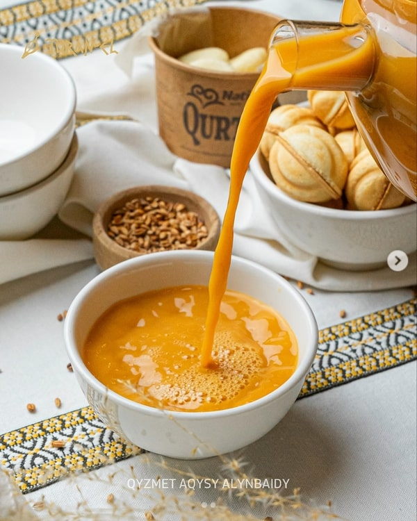

哈萨克斯坦传统美食
点击每一道菜，查看详细介绍：

包尔萨克（Baursak）
包尔萨克是哈萨克斯坦最具代表性的传统点心之一。它是一种油炸面团小块，外酥里软，常在节日、婚礼和招待客人时食用。包尔萨克象征着幸福、团圆和富足的生活。

别什巴尔马克（Beshbarmak）
别什巴尔马克是哈萨克斯坦的国菜，主要由煮熟的马肉或牛肉配上宽面片组成。这道菜通常在重要的家庭聚会或节日时享用。传统上，人们用手吃这道菜，因此得名“五指之食”。

塔里茶（Tary Shai）
塔里茶是一种具有民族特色的热饮，用炒制的小米与牛奶或茶混合而成。它营养丰富，口感浓厚，常在寒冷的天气里饮用，象征温暖与关怀。

萨姆萨（Samsa）
萨姆萨是一种馅饼类食品，外皮酥脆，里面包着肉类、洋葱或土豆。它在街头小吃和家庭餐桌上都非常受欢迎，是快速又美味的传统食品。
← 返回首页